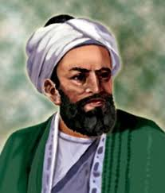

Biruni
4 Eylül 973'te Orta Asya'daki Harezm'de dünyaya gelen Biruni, sarayda matematik ve astronomi eğitimi aldı. Henüz 17 yaşındayken ilk kitabını yazdı. Yaşadığı bölge Me'mûnîler hakimiyetine geçince Biruni de İran'a giderek bir süre hayatını burada sürdürdü. Burada da saray tarafından korunup, çalışmalar yapması için teşvik edildi. İki yıl sonra memleketine dönerek Ebu'l Vefâ ile birlikte astronomi çalışmaya başladı.
1017'de Gazneli Mahmut, Harezm Devleti'ni yıktıktan sonra Biruni de Gazne'ye gelerek Gazneliler'in himayesine girdi. Burada da sarayla iyi ilişkiler kuran Biruni yine korunup kollandı ve çalışmalarını sürdürmesi için teşvik edildi. Gazneli Mahmut'un Hindistan seferinde yer aldı. Burada Hintli bilginlerin de dikkatini çekmeyi başardı ve kendisi de bu kültüre ilgi duydu. Hint toprakları da alınında burada Nendene şehrine yerleşip Sanskritçeyi öğrendi ve Hint kültürü üzerine çalışmalaryaptı.Biruni buradaki çalışmalarını tamamladıktan sonra yeniden Gazne şehrine döndü ve artık hayatınınsonuna kadar çalışmalarını burada sürdürdü. Bu dönem, Biruni'nin çalışmaları için en verimli dönem olarak gösterilir. Biruni, 13 Aralık 1048'de hayatını kaybetti.
Biruni Ne Yapmıştır? Biruni'nin Çalışmaları Nelerdir?
Çok yönlü bir bilim insanı olan Biruni'nin eserleri 180'den fazladır. Tıptan biyolojiye, coğrafyadan jeodeziye, astronomiden matematiğe, madenlerden hayvanlara ve yararlı otlara varıncaya kadar birçok alanda çalışmalar yapmıştır.Biruni'nin matematik alanında yaptıkları, onun en çok bilinen çalışmalarıdır. Biruni, trigonometrik fonksiyonlarda yarıçapın bir birim olarak kabul edilmesini öneren ilk bilim insanı olmasının yanında sinüs ve kosinüs gibi fonksiyonlara sekant, kosekant ve kotanjant fonksiyonlarını eklemiştir. Biruni trigonometrik hesaplarla bir dağın yüksekliğini ölçmeyi başarmıştır. Bunun ardından da yükseltisini bildiği bu noktadan ufuk alçalması açısının ölçülmesi yoluyla meridyen yayı uzunluğunu hesaplaması da geometri açısından önemli bir çalışmasıdır.Astronomi'de de önemli çalışmaları bulunan Biruni, Aristoteles ve Batlamyus'un kurduğu evren sisteminden haberdardır. (Batlamyus'un evren anlayışı için tıklayın.) Bu sistem üzerine çalışmalar yapmış ve Dünya'nın kendi ekseni etrafına dönmesi ihtimalini değerlendirmiştir. Bu konuda kesin bir sonuca varamadığı bilinse de kendisinden yüzyıllar sonra bulunacak bu bilgiyi tartışmaya açmasıbilim tarihi açısından önemlidir.Bunların yanında Dünya'nın ekseninin 23 27’ eğik olduğunu bulmuştur. Modern dönemde yapılan ölçütlere göre bu eğim 23 26’.7 dir. Bu dereceye en yakın değeri bulan bilim insanı Biruni'dir.
Biruni'nin Eserleri
- El-Âsâr'il-Bâkiye an'il-Kurûni'i-Hâli-ye
- El-Kanûn'ül-Mes'ûdî
- Kitâb'üt-Tahkîk Mâ li'l-Hind
- Tahdîd'ü Nihâyeti'l-Emâkin li Tas-hîh-i Mesâfet'il-Mesâkin
- Kitâbü'l-Cemâhir fî Mâ'rifet-i Cevâ-hir
- Kitâbü't-Tefhîm fî Evâili Sıbaâti't-Tencîm
- Kitâbü's-Saydele fî Tıp